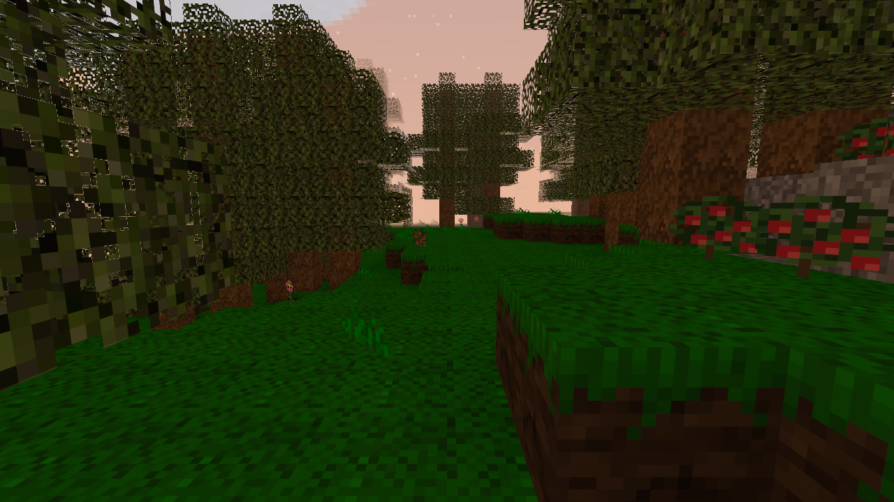
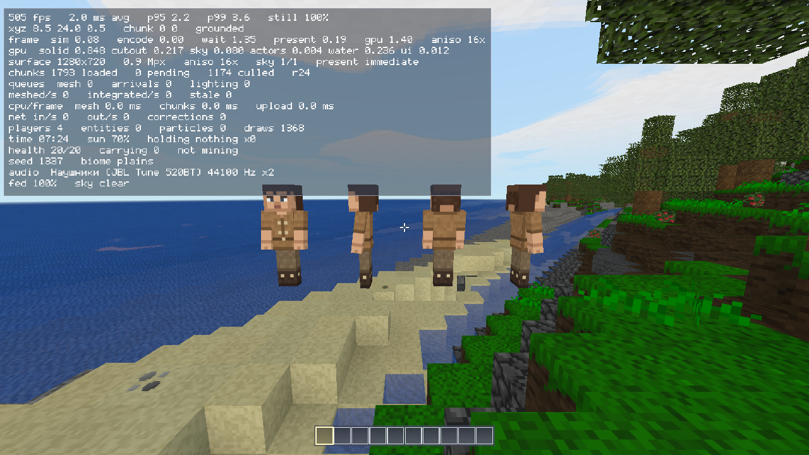
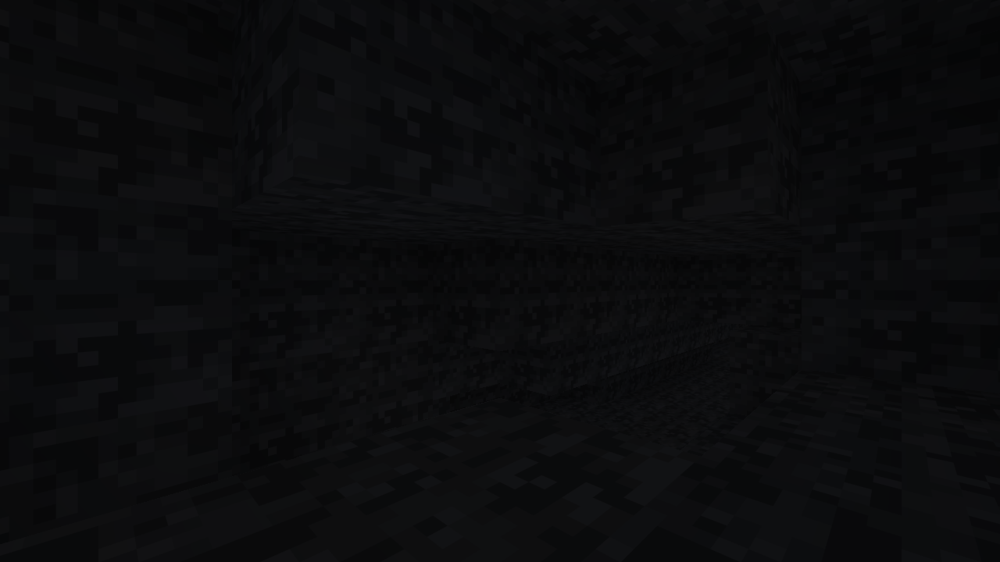
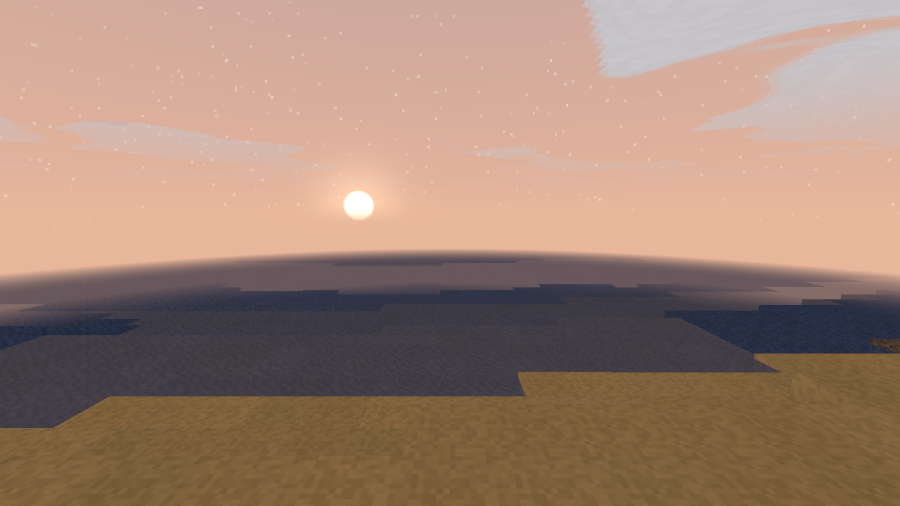
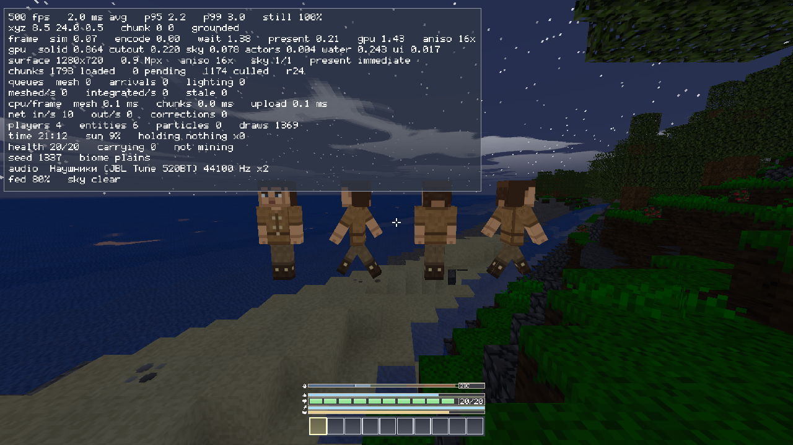

Воксельная игра на Rust: клиент на wgpu + авторитативный сервер на tokio. Одиночная игра и сетевая — на одном и том же сервере.
Текущая версия 1.5.0 · Windows, Linux, Android · открытый исходный код
Скачать Релизы на GitHub Как играть

Мир из блоков, который надо пережить. Вы начинаете ни с чем: волокно из травы, кремень из гравия, первый нож. Дальше — топор, кирка, костёр, мясо, глина, медь, бронза, железо. Сюжет игры — это путь от голых рук до девяти металлических инструментов, и каждый шаг на нём упирается в предыдущий.
Здесь нет отдельного «офлайн-режима»: кнопка Singleplayer поднимает настоящий сервер внутри процесса клиента и подключается к нему по loopback. Мир, физика и симуляция — ровно в одном экземпляре, поэтому одиночная игра не может разойтись с сетевой.
Игра — один файл. Текстуры зашиты в исполняемый файл, звук не хранится, а вычисляется:
банк звуков собирается при старте по рецептам, музыка сочиняется по такту прямо в колбэке звуковой карты.
Папка assets рядом с бинарником не обязательна — но если она есть, файл с диска побеждает встроенный.
Около 80 % игры сделано с использованием нейросетей. Код — Claude (Anthropic): от генератора мира и сетевого протокола до звукового движка и интерфейса. Это не скрытая деталь, а способ, которым проект написан, и он записан в самом репозитории — в README журнал решений объясняет, почему каждая вещь устроена именно так.
Океаны с настоящей глубиной и песчаными пляжами, реки, вьющиеся по низинам, горные хребты со снегом на вершинах, пещеры под всем этим. Биом под ногами показывает F3.
Отщепы, древки, головки — и только потом нож, топор и кирка. Ни один инструмент не делается в обход заготовок. Инструменты тупятся и изнашиваются.
Шкалу тратит не время, а работа: удары, бег, прыжки. Костёр делает мясо втрое сытнее, дождь костёр гасит, и на том же огне плавится медь.
Медь и олово — в тигле у любого огня, бронза — только в горне, железо — через домницу, крицей. Девять инструментов из трёх металлов.
Звери приходят группами, обходят стены, по-разному реагируют на удар. Небо меняется само: ясно, дождь, гроза — и всё это слышно.
Вода течёт и сохраняется, песок падает, сыпучее лежит восьмыми долями блока, по льду разгоняешься. В воде вы плывёте, а под водой кончается воздух.
Авторитативный сервер, античит, сущности, интерес по сетке вместо перебора. Сервер помнит игроков по UUID: рюкзак, здоровье и место выхода переживают перезапуск.
Нативные моды через настоящий C ABI (primitive_modapi) и скриптовые плагины
на Rhai. Полёт /fly живёт в моде, а не в движке.
В репозитории нет ни одного аудиофайла. Двенадцать материалов × четыре события плюс десятки отдельных звуков собираются по рецептам за 167 мс при старте — 222 клипа, 6 МБ. Каждый рецепт прогоняется трижды с разным зерном, так что три шага отличаются ровно так, как отличаются три настоящих шага.
Музыки как саундтрека тоже нет. Есть шесть настроений — меню, день, ночь, пещера, дождь, опасность, — у каждого свои лад, аккорды и темп, и шесть коротких мотивов, написанных руками. Что играть, в какой октаве и над каким аккордом, решает генератор. Тишина — часть замысла: пьеса идёт 16–32 такта и умолкает на 25–90 секунд.
Свои звуки подставляются без пересборки — выгрузите банк в .wav,
поправьте и положите в assets/sounds/. Подробности — в гайде.




Скачайте архив релиза, распакуйте, запустите primitive_client.exe. Больше ничего не нужно.
Или из исходников — нужен Rust (стабильный):
cargo run --release -p primitive_clientОбязательно --release. В отладочной сборке построение мира
в десять–двадцать раз медленнее, и играть в неё нельзя.
| Куда | Что там |
|---|---|
| Репозиторий | исходный код, история, issues |
| Релизы | сборки под Windows и Linux |
| GUIDE.md | полная инструкция игрока |
| README.md | журнал решений: почему всё устроено именно так |
| CHANGELOG.md | что менялось от версии к версии |
| Issues | баги и предложения |